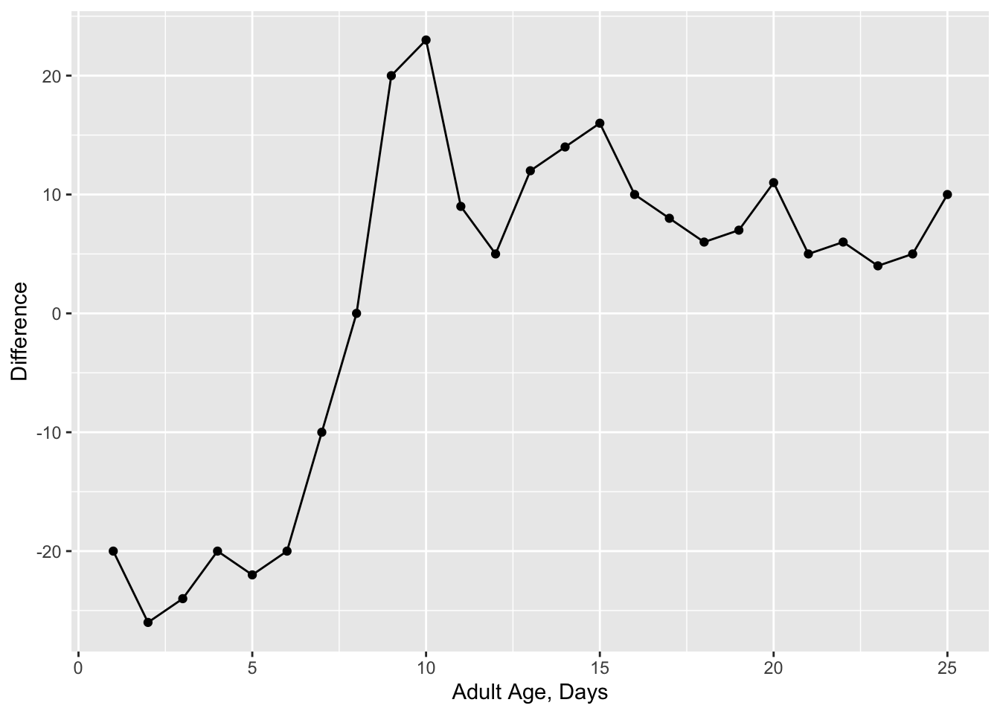
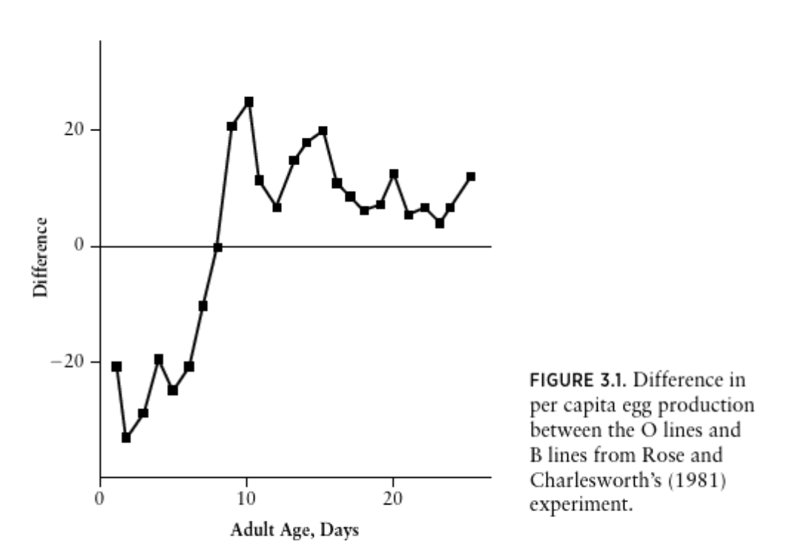

5 Jan 12: ASSIGNMENT Rmarkdown and tidyverse
(Dates changed owing to the university closure for a snow day)
ASSIGNMENT 1 due Jan 19.
PART I is to reproduce a figure and the figure caption of a plot in Vandermeer and Goldberg 2013 or another textbook or a published paper in Rmarkdown and as an output file: .hmtl, .pdf, or .docx. Please choose a figure to reproduce in the area of Population Biology or Evolutionary Ecology.
You can simplify a complex figure if necessary. Your figure should be made in ggplot() and have:
the title (if there is one),
axes labels,
points or lines or both,
approximately the same data as the original figure,
the correct axes limits.
The objective is for you to learn how to use Rmarkdown to make a synthetic write-up that includes code, a figure and text. Your completed output should have:
- A brief text description of where I can find the figure you reproduced.
- Code that makes a figure that is suppressed in the output file.
- The reproduced figure (or simplified figure).
- The actual figure
You are to hand-in the .Rmd file and an output file (.html, .pdf, or .docx)
Here, is an example of what a completed PART 1 looks like (as an .html output).
The graph is Figure 3.1 from Population Ecology: First Principles - Second Edition (Vandermeer and Goldberg) on p67.

FIGURE 3.1 Difference in per capita egg production between the O lines and B lines from Rose and Charlesworth’s (1981) experiment.

Instructions to complete PART I are here.
PART II of this assignment is to clean up messy data. As a biologist, much of my coding work involves getting data into the right format to use in functions, this might be a plot function like ggplot(), which you used in PART I, or a statistical function like lm(), which will perform a regression, t-test, or analysis of variance. The objective of PART II is to practice cleaning messy data into a useable format.
- You are to clean the messy data from here enough so you can make a plot using
ggplot(). Some helpful instructions for how to do this are here. The code that you write must use theselect(),mutate(), andggplot()functions. The graph that you make must be different than the example given in the instructions - for example, you might plot the same variables but for Plot 2.
(perhaps this sounds easy - this data is pretty messy - I found it quite hard!)
TO HAND IN
- Hand in an
.Rmdfile and an output file (.html,.docx, or.pdf) with the solutions to both PART I and PART II of this assignment. Each part is 10 marks for a total of 20 marks.